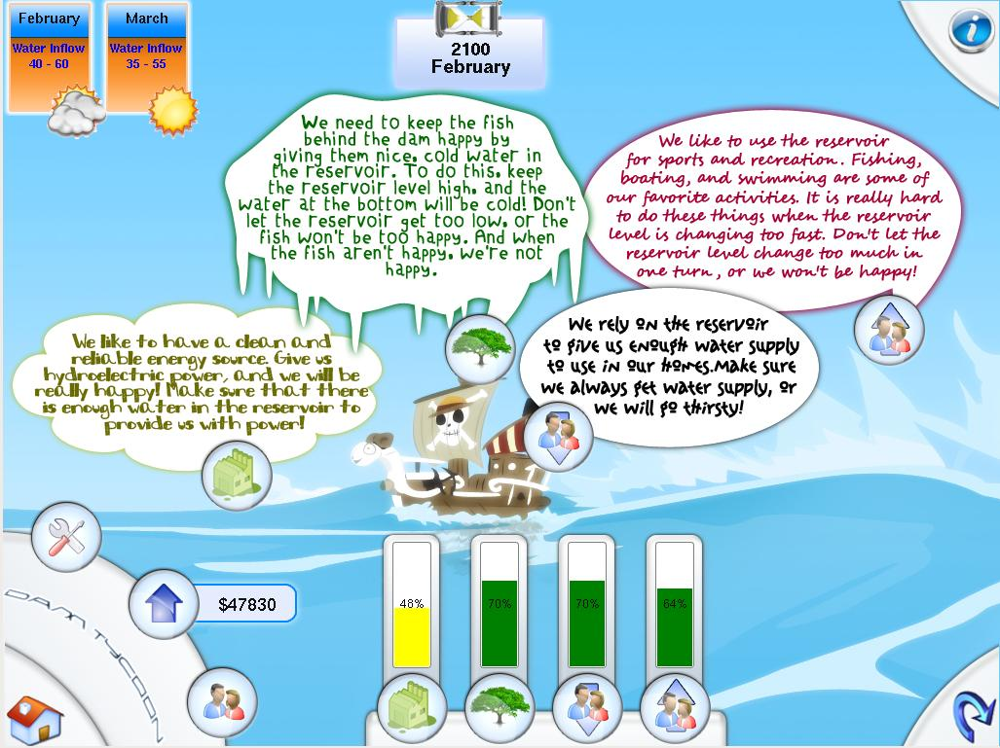
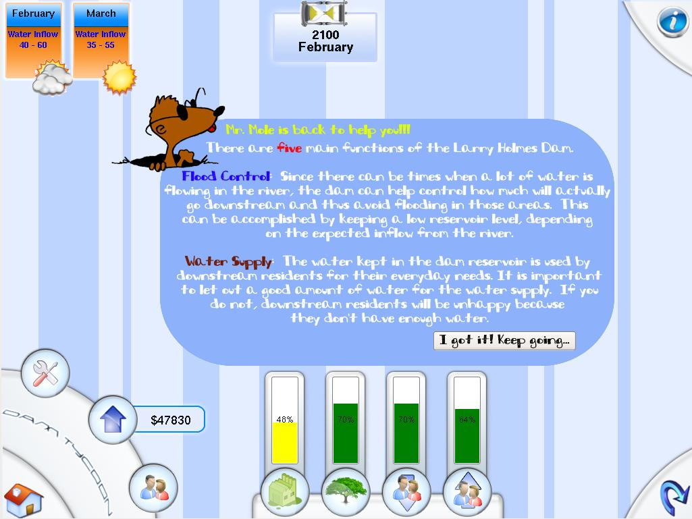
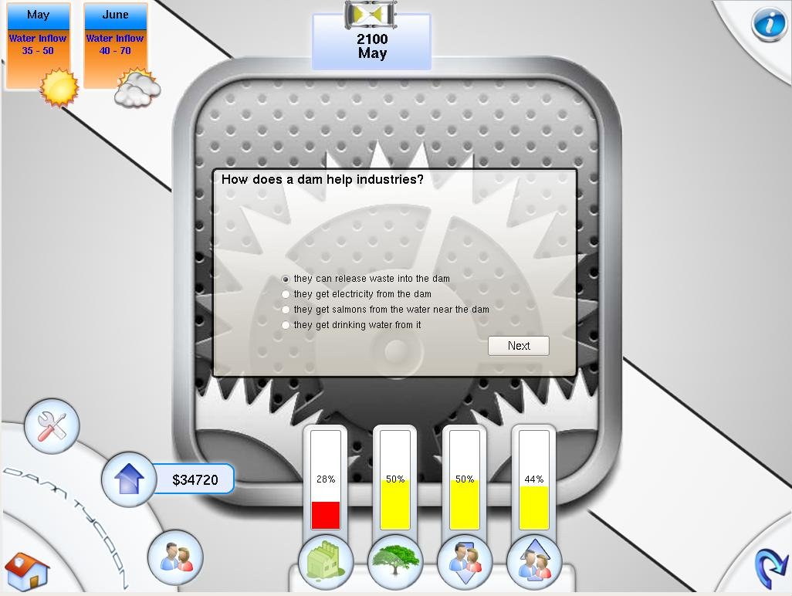
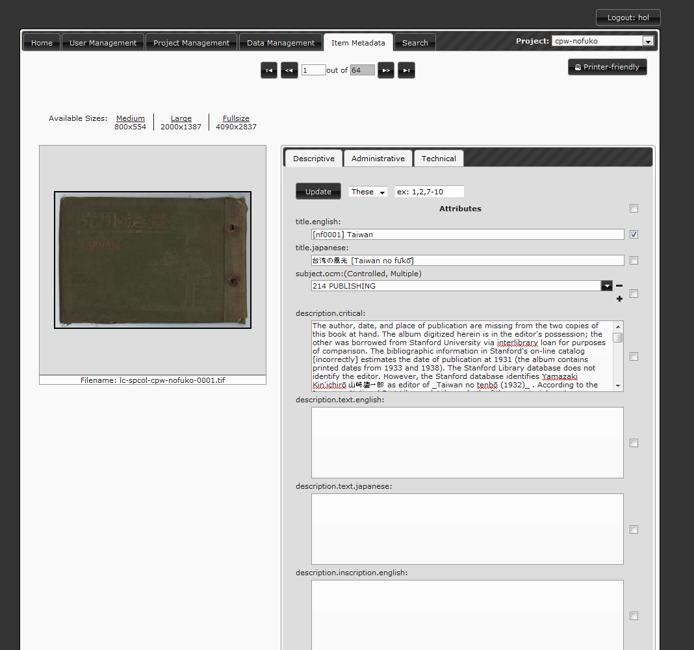
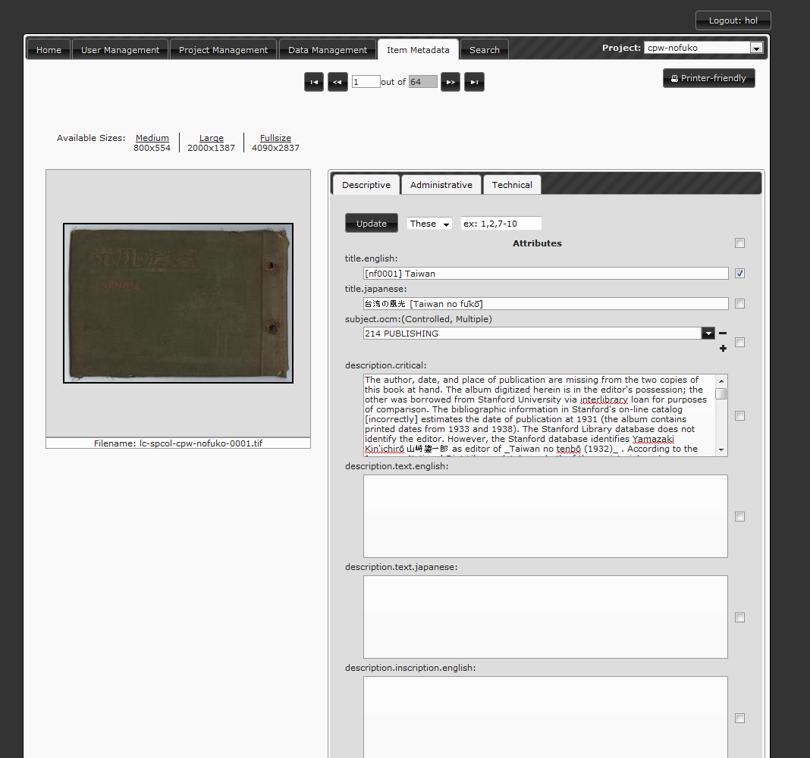

It's an iPhone application the brings forth Lafayette College virtual services to iPhone/iPod Touch student users on campus. My friend Khine Lin and I are pretty obsessed with iPhone and the technology behind it (well, and the iPhone app hype as well). We're currently having codes up on Google Code right here. I have also attached a few screenshots of our protoype right below:
MetaDB
MetaDB is a web application that my friend Haruki Yamaguchi and I have been developing for more than a year under the supervision of Eric Luhrs, Digital Initiative Librarian. It has a lot of functionalities, which include user management, auto-parsing high quality tif images for metadata, project management for each dataset and plenty of other thing.
It's also open-source but since we're still developing it, its source is not available yet but you can check it out here on Google code: MetaDB on Google Code or live working version: MetaDB at Lafayette
Front End: HTML, CSS, JavaScript, jQuery
Back End: J2EE, PSQL, Apache Tomcat
The live version is restricted but I've included several screenshots here:
Flood Advisor is a small Java program that we are building for our senior project. It mines data from the National Weather Association and locate the closest flood gates to your input location. The technology behind it is pretty straightforward: we used NetBeans IDE. Our UI is Java Swing and of course our backend is Java. We retrieve GPS location from Google geocoding services along with Google map of local area. The flood data is KMZ, which got unzipped on the fly and parsed for relevant information.
Currently the project is still ongoing. The file below is only UI prototype, which is not fully functional.
Specs Requirement: Java JRE
Computational Art
I had a chance to work with professor Liew and a team of developers consisting of Khine Lin and Rhody Baker in developing the Graphical User Interface for an art project. I also have a group of junior testers who were using my program to build several art pieces, which were pretty fun. The backend engine is basically a Lindenmeyer system that maps a grammar to a certain context. The grammar is how the system grow. For ex:
if:
A -> AB
B -> BB
then:
AB -> ABBB after 1st generation
ABBB -> ABBBBBBB after 2nd generation and keep going
and A, B can be mapped to a line, circle, cone or change in light source and such. I have also attached several screenshots here, a video of how 2 sample grammars grow and how we made it big time to our school front page for a while (a.k.a an interview :)). A link to my paper submitted to NSF is right here
DamTycoon
This is a small game for kids as part of our Flood Awareness project. Our team has 4 people: me, Khine Lin, Haruki Yamaguchi and Hank Bink. The purpose of the game is to keep the dam from flooding while satisfying different types of people by adjusting different levels of water flow. The linux binary version can be downloaded here. We mainly used Qt for UI design, along with C++ and KDevelop IDE. We also use doxygen and umbrello for documentation and class design.



Urban Planning
I was inexperienced back then so i was in charge of writing several small Python modules that parses KML files and maniuplate them. Specifically, I was taking input from another group of developers, which is a layout of an urban area using certain symbols and mappings. For example:
H H H R H H H
H S H R H H H
R R R R R R R
where H is a House, S is a School and R is Road. The House, Road and School models are KML 3D shapes drawn in Google SketchUp and my job was pretty much parsing those files, extracting dimensions and doing mathematical manipulation on those to make sure they are displayed properly on certain locations on Google Earth. The reasoning behind this is because of different ratio between longitude and latitude at different GPS location. Unfortunately I didn't keep those works as I was struggling with learning Python and XML and SAX was not available at the time.
Fish Evolution
This was my first research EVAR in my life. It was a pretty good experience which helped me a lot of my researching skill in general. My research was mainly about Differential Equations and how they're implemented in a simple model of interaction between Mauthner cells and the fish's behavior.
I also got to go to the SICB Conference in San Antonio, Texas. You can see my poster in full size right here and my presentation at Vassar College right here. Both files are around 4Mb.
ABOUT ME
Hello, my name is Long Ho. I was born and raised in Vietnam but came to the US for college. I'm currently a senior at Lafayette College majoring in Mathematics and Computer Science.
I love designing friendly, clean, elegant User Interfaces along with fast, reliable and lightweight softwares. I also enjoy mastering my Xbox 360 games and dancing, blogging, facebook-ing and all that.
I'm the type of person that works hard and has fun, literally.
BTW, the name AznDezign came to me randomly since I'm Asian (Azn, you know... nvm -_-)
CV & PORTFOLIO
I maintain 2 versions of my resume. The looks are different but the contents are very similar: The cool one The conservative one
I also have a PDF of my portfolio, more compact and professional. You can download it right here.
ARTICLES
Over the past 3 summers I have been doing research on campus so I've been featured on several articles on our school web page, the links of which are right below:


 



{kind=link}
{kind=link}
{kind=link}
{kind=link}
{kind=link}
{kind=link}
{kind=link}